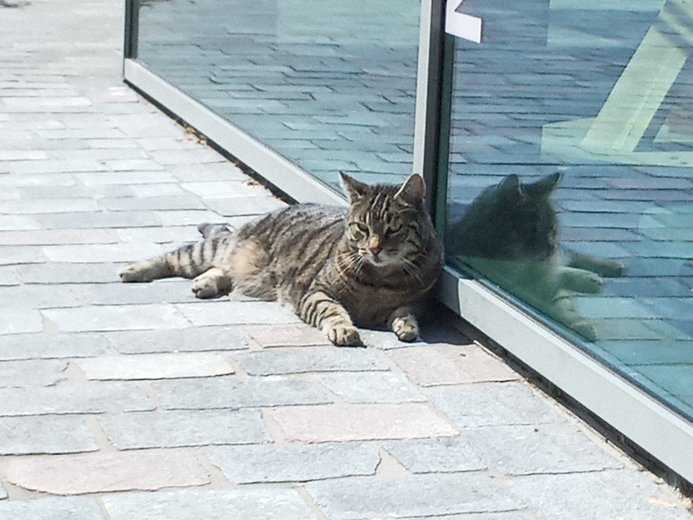

Campus
Bibliotheek
Locatie: Kohnstammhuis 1e etage – Bibliotheek
Bij de Bibliotheek kun je van alles lenen: van boeken tot dvd’s.
HvA-studenten en –medewerkers hebben een geldige HvA-pas nodig om te lenen bij de HvA Bibliotheek. Externe leners hebben een geldige lenerspas nodig. Met een geldige pas kun je materialen uit de HvA-collecties inzien of lenen. Ook is het mogelijk om materialen aan te vragen uit de UvA-collecties.
Campuskat (Jerry)

Locatie: Rondom het Theo Thijssenhuis
Jerry is de bekende huiskat van de Hogeschool van Amsterdam (HvA) die af en toe opduikt rondom de locaties en social media van de Hogeschool van Amsterdam.
Volg Jerry op Instagram: @Campuskat